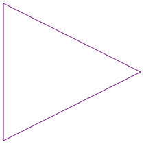
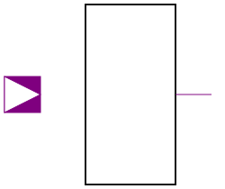

This package contains basic definitions: Type definitions of Logic and Strength, interface definitions (connectors) for digital electrical components, and partial models for connection patterns which are often used.
| Name | Description |
|---|---|
| Logic values and their coding according to IEEE 1164 STD_ULOGIC type | |
| 4-valued subtype of IEEE 1164 STD_ULOGIC type | |
| Output strengths of registers | |
| Digital port (both input/output possible) | |
| DigitalInput | Input DigitalSignal as connector |
|  DigitalOutput | Output DigitalSignal as connector |
| Single input, single output | |
|  MISO | Multiple input - single output |
| Multiple input - multiple output | |
| Base model for memory elements |